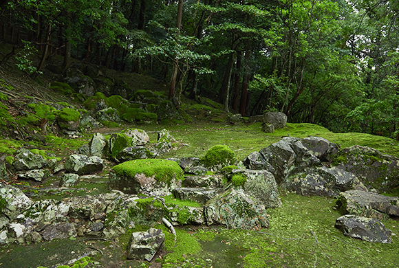
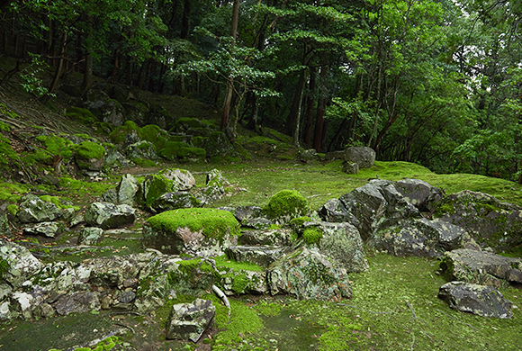

SCROLL
西芳寺庭園は、
上下二段に分かれており、
上段は枯山水式庭園、下段は黄金池を中心にした池泉廻遊式庭園になっています。
庭園は史跡・特別名勝に指定されています。
参拝当日は、
当ページでご紹介しきれなかった場所も含め、
四季折々の庭園をお楽しみください。
昭和44年(1969年)、京都大学名誉教授村田治郎先生の設計・監督により、再建されたもので、西来堂(さいらいどう)と言います。内部襖絵は、堂本印象画伯により百四面が抽象画で描かれています。本尊は阿弥陀如来をお祀りしています。尚、参拝者の皆様には庭園の拝観に先立ち、本堂での参拝にも参加いただいております。
西芳寺庭園の本池であり、下段の庭の中心景となります。黄金池は心の字を象っており、心字池とも呼ばれています。
豊臣時代に千利休の次男、千少庵により建立されたお茶室で、国の重要文化財に指定されています。北に張り出した月見台が特徴で、月見台北の黄金池には「朝日の清水」という泉が湧いています。千利休が豊臣秀吉より切腹を命じられた時、一時隠れ家として利用したと言われてます。また、明治維新の際には岩倉具視がここに隠れ、幕府の難を逃れました。
開山堂です。中には西芳寺の祖師方である行基菩薩、眞如法親王、夢窓國師の御位牌と藤原親秀夫妻、夢窓國師の木像をお祀りしています。


夢窓國師により、暦応2年（1339年）に築かれた日本最古の枯山水の石組で、夢窓國師の生前の墓(寿塔)の造形化したものと言われます。それまで、庭園の主流は、池をメインにした池泉庭園でしたが、夢窓國師は石組を庭の主役としたばかりでなく、禅の精神性をもその中に反映させました。これは、当時としては非常に革新的で有り、まさに“新時代的”な石組みであるとも言えます。
この夢窓國師作庭の西芳寺枯山水はあらゆる枯山水庭園の原点ともなり、我が国における枯山水庭園の最高峰とも評されています。庭園そのものが禅の精神修練の道場とされました夢窓國師の悟りの境涯がここに託されました。
 
